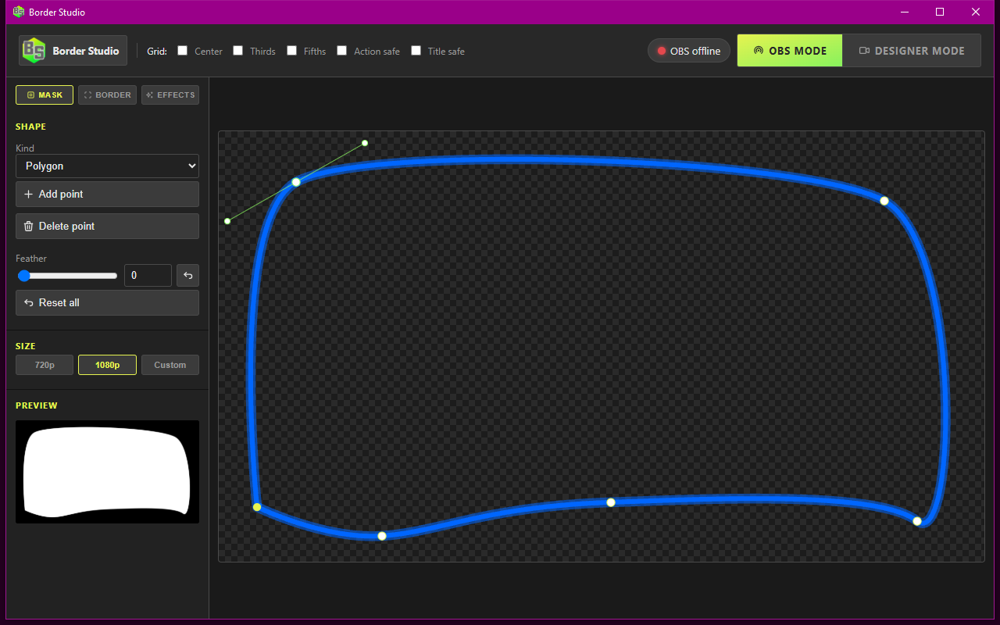
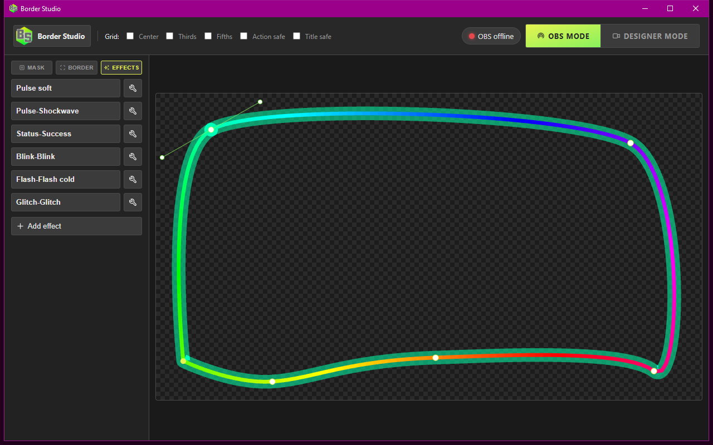
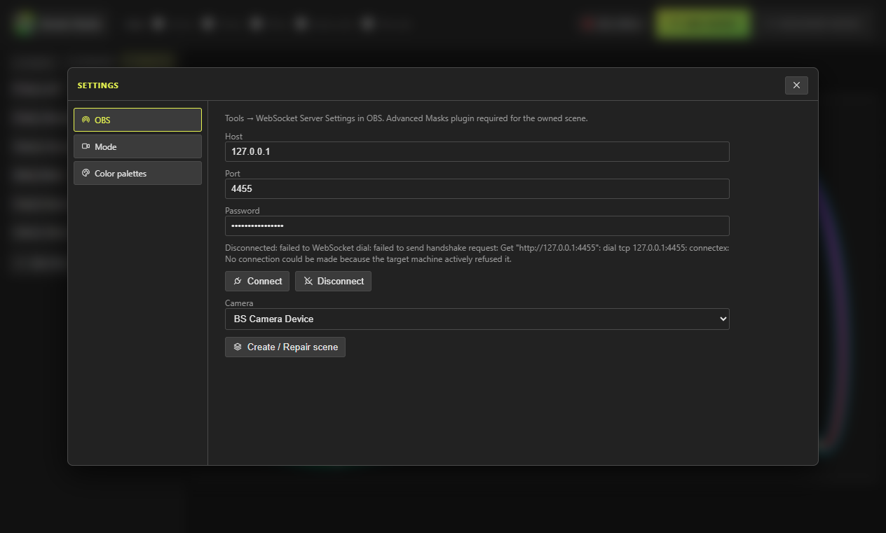

Designer
One window: draw the camera hole, paint the edge, stash effects. Grids, palettes, and OBS connect live in the same place.

Windows · OBS · Webcam
A Windows app for streamers who want their webcam to sit in a shape they chose, with a border that matches the rest of the stream. You draw the hole, pick how the edge looks, and OBS shows your camera through that hole with the border on top.
Open the Designer, shape the hole on the Mask tab, paint the edge on Border, and stash one-shot bursts on Effects. When you go live, OBS uses that look.
One window: draw the camera hole, paint the edge, stash effects. Grids, palettes, and OBS connect live in the same place.

One-shot bursts on the overlay. Click to fire, wrench to edit animation, duration, tint, and presets.

WebSocket owns a scene: camera, mask, overlay. Stream in OBS mode so the webcam stays with OBS.
